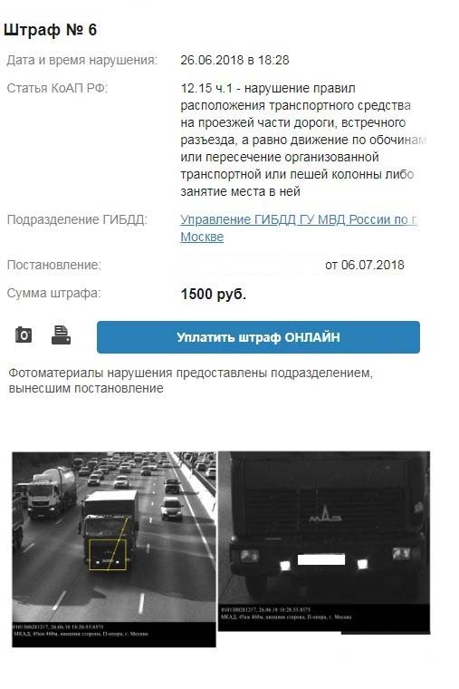

Официальные источники данных
Официальный сайт
ГИБДД
ГИБДД

Федеральная служба судебных приставов
МАДИ, АМПП

МУГАДН
Поиск штрафов по трем документам - ВУ, СТС и УИН.
Проверить штрафы онлайн можно через наш сервис всего за 2 минуты.
Отчет покажет взыскания, выписанные за превышение скорости, неправильную
парковку и другие
нарушения.
Полный отчет о штрафах
«Штрафы03» собирает информацию из официальных источников:
ГИБДД, МАДИ, АМПП, ГИС ГМП.
После проверки увидите общее количество и общую сумму штрафов. Также в отчете будет история
штрафов
и отдельная информация по каждому штрафу ГИБДД:
Сразу после проверки можно оплатить штраф онлайн.
Пример отчета
Скидка 50% при оплате штрафа
В первые 20 дней с момента вынесения постановления можно оплатить штраф со скидкой 50%.Уведомления о новых штрафах
Укажите адрес электронной почты для бесплатных уведомлений. При новом начислении мы вовремя уведомим клиента и предложим произвести оплату.Гарантия погашения
Сразу после оплаты штрафа онлайн отправим все данные в ГИБДД .Проверка штрафов по номеру автомобиля или водителю
С помощью сервиса вы сможете без труда проверить наличие неоплаченных штрафов по номеру авто или
водительским правам. Больше не нужно ждать бумажного постановления, чтобы узнать подробности о
штрафе.
Наш сервис поможет вам найти все автоштрафы, полученные от госавтоинспекторов и с дорожных камер.
Как оплатить штраф?
Чтобы найти автомобильные штрафы, выполните 3 простых действия:
1. Укажите госномер авто (или другие данные, например, номер ВУ);
2. Кликните на кнопку “Проверить штрафы”;
3. Подождите несколько секунд, пока формируется отчет. Сервис соберет информацию из официальных
источников и покажет детали каждого нарушения.